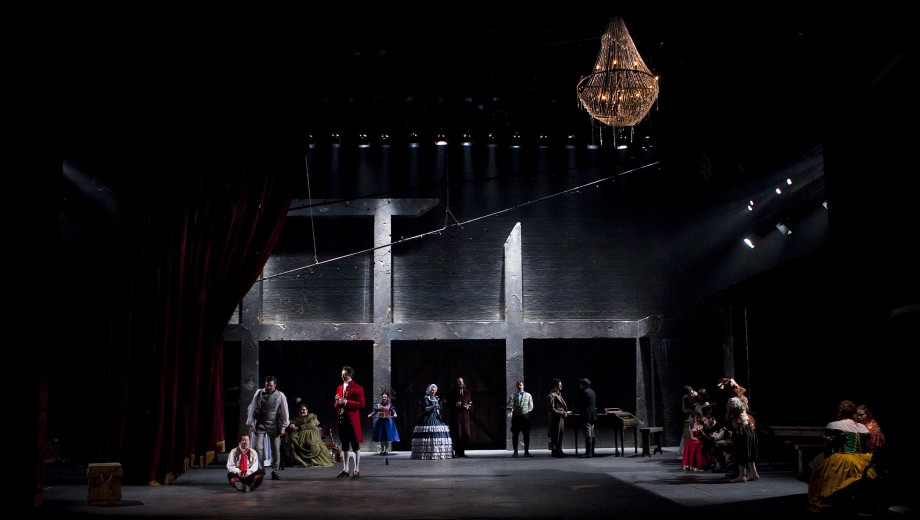
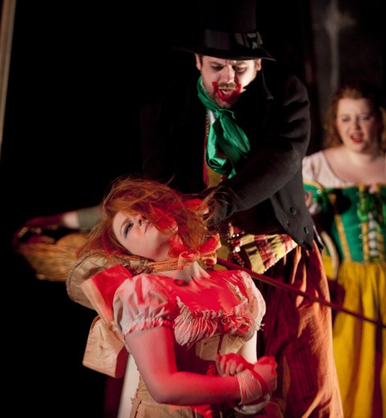
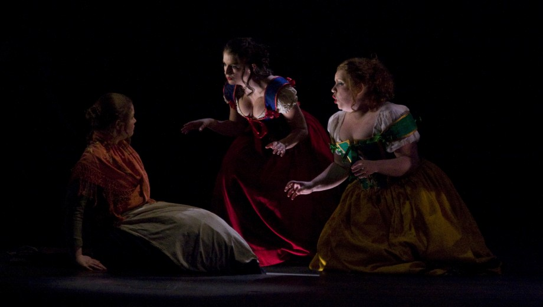
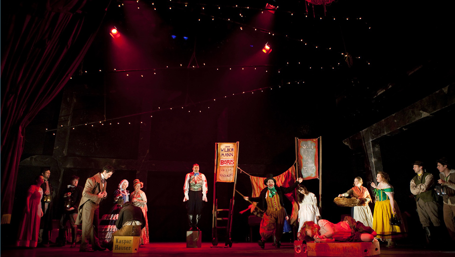
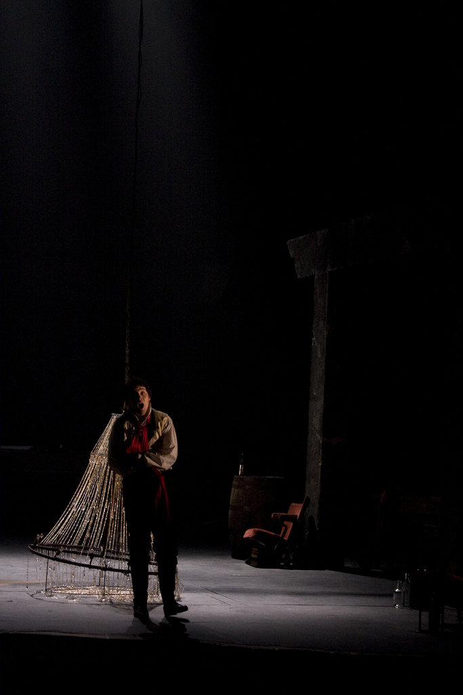

Scènes
Kaspar Hauser
Le conte mystérieux de Kaspar Hauser, enfermé dans un donjon jusqu’à l’âge de 15 ans. Des personnages débordant d’excès envahissent un théâtre vétuste, tout comme la société envahit l’esprit de Kaspar.
- Lieu
- Royal Conservatoire of Scotland
- Scénographie
- Anna Jones
- Mise en scène
- Freddie Wake-Walker
Photographie: Kevin Dundas
- 
- 
- 
- 
- 